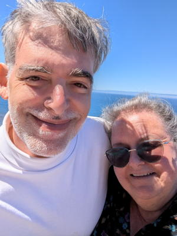

2024 Holiday Web Page

| Erich and Margie's 2024 Holiday Web Page | |
December We took Pancho to the dog beach a few days before Christmas to avoid the rain. Erich watched season 2 of "Star Trek - Strange New Worlds". We enjoyed Michael and Deborah's Solstice pot luck, and our table won their Winter Trivia. Erich watched season 1 of "3%".
January We enjoyed Bill and Judi New Year's pot luck, and Miguel and Erich won this year's bocce tournament. Erich watched season 2 of "3%" and seasons 1 and 2 of "Foundation". We finished watching the entire series of "The Big Bang Theory" for the second time. We went to games parties at Miguel and Regina's, and Missy's. Margie took some great nature photos. We went to a baseball game, where Erich got his first ever January sunburn.
February The Thai restaurant got Margie's order wrong and made chicken pad thai instead of tofu. So without our knowledge they made her the correct order to take home for free, and then tried to charge us for it! Pancho turned 12. Erich watched season 3 of "3%".
March At a Stetson baseball game, we saw a batter called out for using an illegal bat! Erich saw a deer on our lane for the first time. Erich watched season 4 of "3%". Margie spent a day in the emergency room, and a few days later, Pancho spent 3 nights at the emergency animal hospital. We enjoyed a nice dinner at Michael and Deborah's. We saw a wild turkey on our morning walk. Erich was diagnosed with an eye infection, then conjunctivitis, then an eye virus, then allergies, then calcium concretions. Erich watched season 2 of "Halo". We celebrated Margie's birthday a few days early with Missy, Barbara, and John.
April At the annual mini-golf tournament, we got 2nd and 5th out of 9, but Erich won the "most improved" trophy. We saw the eclipse. Erich was supposed to get a visit from his German friend Sylvia, go to Gamblefest with Margie, and spend a week in Oregon, but none of that happened because of a diverticulitis episode. Erich started playing in the bi-weekly Sanford Backgammon Group. Erich watched season 4 of "Star Trek - Lower Decks". Pancho likes to lunge at raccoons, even ones painted on bricks. Margie and Missy spent a morning at Lake Woodruff.
May Margie found a pet bird. The bagger at Publix sent Erich home with 4 bags when 1 would have sufficed. Shannon took Erich, the Brantons, and the Dunns on a boat tour of Winter Park. We got a new roof. And a new air conditioning unit.
June Erich went to a games party at the Dunn's place. We celebrated Erich's and Missy's birthday with a games party. Erich watched season 4 of "For All Mankind". Erich started playing backgammon online to hone his skills.
Sylvia Erich's friend Sylvia visited from Germany. We kayaked Blue Spring, walked trails at Gemini Springs, Green Spring, and Black Bear Wilderness Preserve, and spent a day at the Merritt Island Wildlife Refuge (where we ran into Catalina and Billy!). We hosted a trivia party, played mini-golf (it was Sylvia's first time, and she was pretty good), did Daytona's Museum of Arts and Science, went to a Museum of Illusions, and played bocce at Bill and Judi's (it was Sylvia's second time, and she almost won!).
July Erich was supposed to finally go to Oregon in early July, but his first flight to Dallas was leaving 3 hours late, so there was no way to get there for DAYS, so he pulled the plug. But despite talking to 4 people at the airport about it, filling out forms, calling repeatedly when he got home, my luggage went to Eugene without me. He added American to the list of airlines he will not use anymore. Erich owned a cell phone for about an hour. It didn't work, so he returned it, and decided not to buy another. On the same day, our water heater leaked and flooded our garage, and our well pump stopped working. Erich came home from the grocery with two peaches that he neither picked out nor paid for. Erich got sicker than usual, causing another round of postponements.
Monet Erich went to visit his friend Monet and his luggage in Eugene. We got high, did psychedelic shrooms, and drank a lot. We had a caricature drawn at the Saturday market, took a private river cruise, took a private glass blowing course, drove to the coast for a day, and he climbed a mountain with his high school girlfriend Liz, whom he hadn't seen in 39 years. We ate at a different bakery every morning, ate at a lot of food trucks in the evenings, and he got to meet her best friends.
August We played mah jongg at Barbara's place. Our water pump stopped working again, and neighbor Mark came to our rescue. Erich watched the two seasons of "The Lazarus Project" and the last season of "The Umbrella Academy". Margie saw a bear on our road while walking Pancho. Jeff, one of Erich's college buddies, was struck and killed while riding his bike.
September
Erich's holiday puzzles can be found here. You can see our archive of our previous holiday web pages here.


